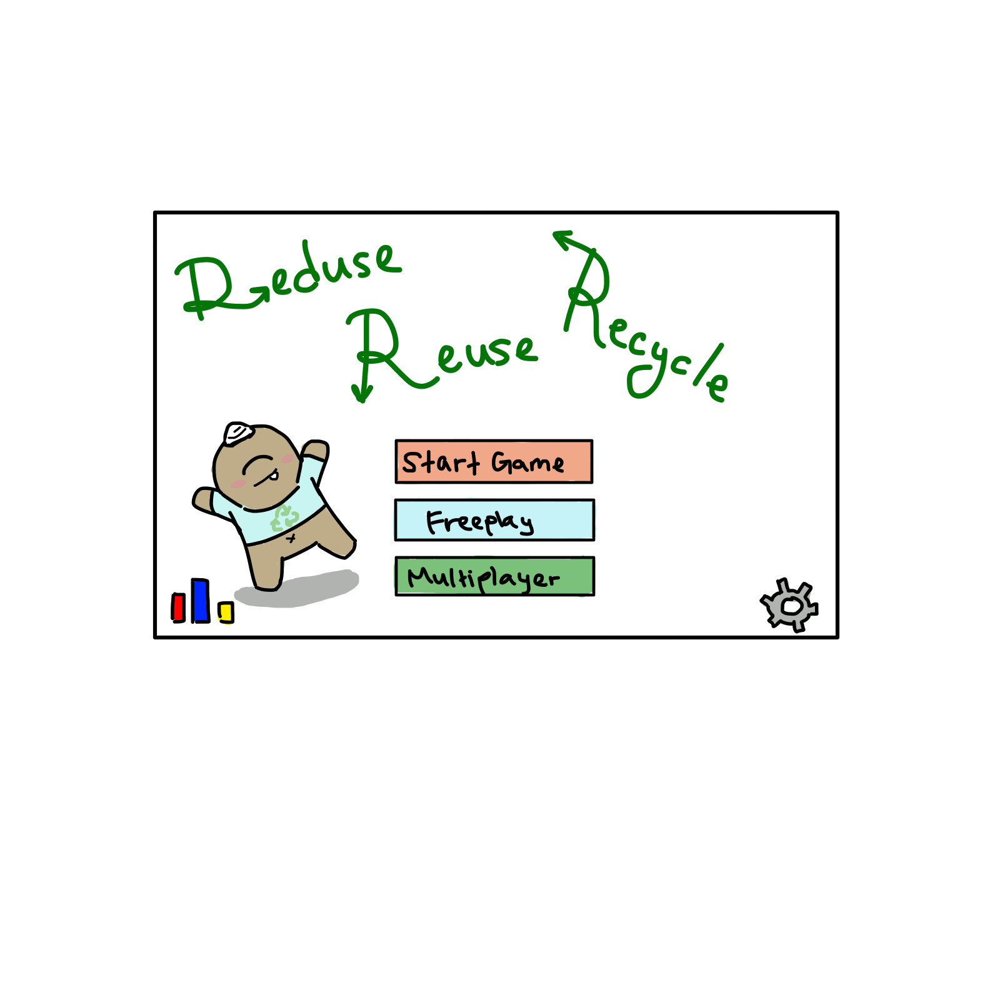

How to Play
Our game, when completed, will have a board where users roll a die and depending what space they land one, they play one of three minigames. Each minigame teaches players to either reduce, reuse, or recycle items commonly thrown in the trash. To advance on the board, players must achieve a passing score on each minigame. The goal is to make it to the end of the board after playing the minigames.
Minigames
DIY Doozy

DIY Doozy teaches how to reuse and repurpose everyday objects into new items and what materials around them could be saved to potentially be used for DIY crafts. It teaches players to be resourceful and reduces waste.
Sorting Scramble

The player is delivered garbage through a conveyor belt with the task to sort everything that comes into their proper categories. Is it compostable? Is is recycleable? Are they even disposable? Test your knowledge!
Eco-friendly Hustle

Eco-friendly Hustle is an eye-spy game that teaches players to find common household items that could be swapped out with more environmentally friendly alternatives. It also teaches lifestyle choices that help the environment such as composting and
Trash or Treasure

Trash or Treasure allows you to play as a character who runs around and finds trash that has accumulated inside their house. They have to collect them all and find the proper way to dispose or recycle them under a time limit.